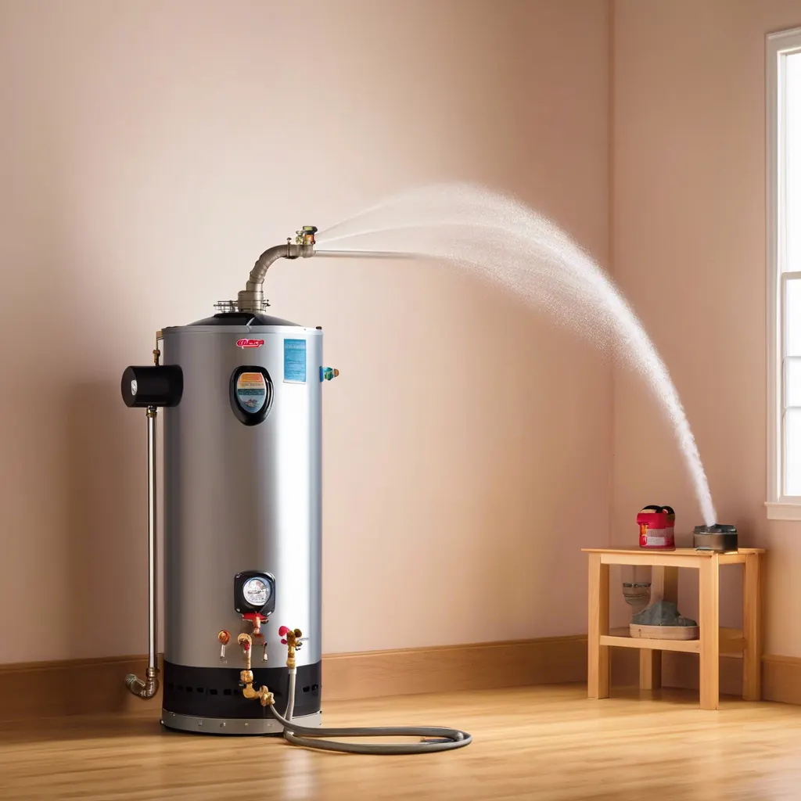

Water heater maintenance is an important aspect of homeownership that often gets overlooked. Neglecting it can lead to various issues, such as increased energy bills and premature system failure.
Benefit #1 Extends Lifespan: Regular maintenance, including flushing the tank to remove sediment, extends the life of your water heater. It prevents corrosion and reduces wear and tear on essential components.
- Maintain Water Heater Filters Annually to Prevent Scale Buildup
- Flush Water Heater Annually to Keep Internal Component Clear of Scale
- Clean Heating Elements to Prevent Early Burnout
- Clean Gas Burners, Thermocouple, Flame Rods, Ignitors to Maintain Peek Performance
- Inspect & Test Temperature & Pressure Relief Valve to Prevent Unwanted Failure
- Inspect Anode Rods, Replace if Worn
- Check Water Heater & All Connections for Leaks
- Inspect Thermostat for Proper Operation, Adjust to Appropriate Temperature
- Test and Inspect Water Supply Pressure, Too Much Water Pressure Leads to Leaking Water Heater
Benefit #2 Improves Efficiency: Sediment buildup forces the water heater to work harder, consuming more energy. Maintenance ensures optimal heat transfer, lowering energy consumption and utility bills.
Benefit #3 Prevents Costly Repairs: Regular inspections can identify potential issues before they become major repairs. Addressing minor problems early can save money over time and extend the life of your water heater.
Benefit #4 Ensures Safety: Malfunctioning pressure relief valves, gas leaks or improper burner performance pose safety hazards. Maintenance ensures that safety mechanisms function correctly, preventing accidents. Additionally, inspected drain controls for overflows, drip pans can minimize potential water damage to your property.
Benefit #5 Maintains Warranty: Many manufacturers require proof of regular maintenance to uphold the warranty. Skipping maintenance could void the warranty, leaving the owner responsible for repairs, or worse the replacement cost for a new water heater. Recently, manufacturers are requesting photos of the unit prior to any warranty service work to determine liability.
Benefit #6 Consistent Hot Water Supply: Proper maintenance ensures a reliable and consistent supply of hot water for the home, minimizing the unwanted cold shower.
Prioritizing water heater maintenance ensures its longevity, efficiency, and safety, ultimately saving money and preventing future issues. Oftentimes water heaters are forgotten simply because they are out of sight out of mind, if you have a tendency of forgetting, join the folks that leverage Angle Stop Plumbing's membership plans to keep their water heater performing at its peak.